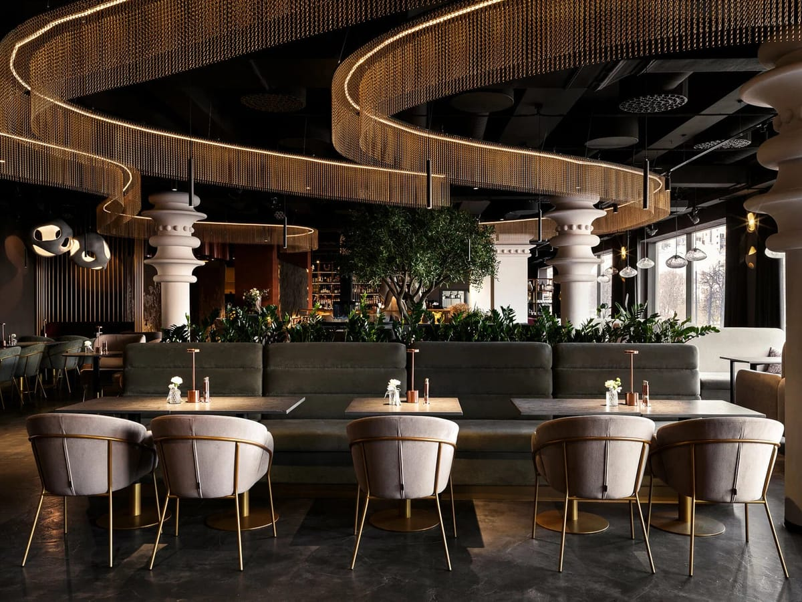

МоскваРесторан премиум-класса
Эверест Сибирия
Комплексное продвижение ресторана премиум-класса на Садовом кольце, в 5 минутах от Патриарших прудов. Задача — привлечь платёжеспособную аудиторию и повысить узнаваемость бренда.
Боли клиента
- Высокая конкуренция в премиум-сегменте центра Москвы
- Нестабильный поток броней, особенно в будние дни
- Высокая стоимость привлечения гостя без понимания окупаемости каналов
- Отсутствие аналитики — невозможно оценить, какая реклама реально приносит выручку
Решение
- Контекстная реклама в Яндекс.Директ с фокусом на деловые ужины, банкеты, особые поводы
- Карточка в Яндекс.Бизнес с геопривязкой и системной работой с репутацией
- Сквозная аналитика для контроля окупаемости каждого канала
Проделанные работы
- Реклама Яндекс.Директ
- Таргет по запросам: премиальные рестораны центра Москвы, рестораны у Патриарших, банкеты, деловые ужины, романтические вечера
- Геотаргетинг на Садовое кольцо и Патриаршие пруды с расширением на платёжеспособную аудиторию города
- РСЯ-реклама для расширения охвата и формирования спроса
- А/В-тестирование объявлений и оперативная оптимизация ставок под целевые заявки
- Реклама Яндекс.Бизнес
- Заполнил карточку, добавил профессиональные фото блюд и интерьера, оформил рекламную подписку
- Поддерживал актуальность карточки: меню, акции, спецпредложения
- Работал с репутацией: отрабатывал негатив, отвечал на отзывы, поднимал рейтинг
- Сквозная аналитика
- Настроил аналитику по всем рекламным каналам
- Контролировал ROI и эффективность кампаний в реальном времени
- Настроил автоматический учёт заявок, звонков и онлайн-броней
Выводы
- Уже в первый месяц ресторан получил стабильный поток броней, в том числе в традиционно «пустые» будние дни
- Сквозная аналитика позволила перераспределить бюджет в пользу самых окупаемых каналов
- Системная работа с отзывами подняла рейтинг карточки и повысила доверие новой аудитории
Результаты в цифрах
+64%
броней за первые 3 месяца
ROI 298%
окупаемость рекламы
−27%
стоимость лида (CPL)
+19%
средний чек за счёт премиум-аудитории
Яндекс ДиректЯндекс БизнесСквозная аналитика